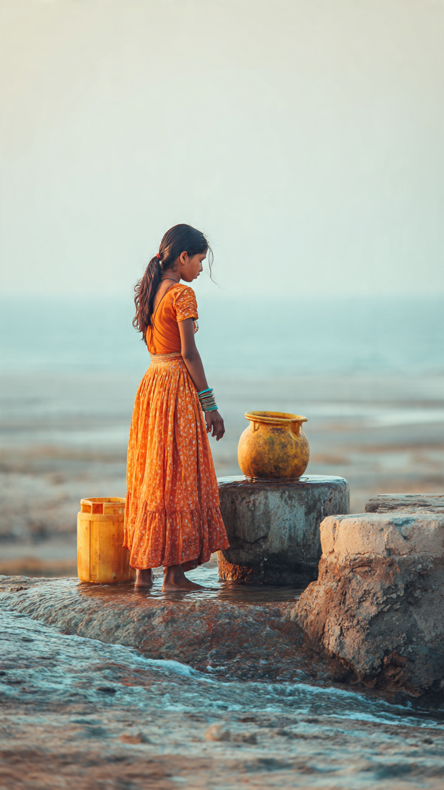

ఆంధ్రప్రదేశ్లోని ఆళ్లూరి సీతారామరాజు (ASR) జిల్లాలో జరిగిన విషాదకర ఘటన రాష్ట్రాన్ని దిగ్భ్రాంతికి గురి చేసింది. జలపాతం వద్ద ఫోటోలు తీసుకుంటూ జారి పడిన నలుగురు బాలికల్లో ముగ్గురు అక్కడికక్కడే ప్రాణాలు కోల్పోగా, ఒకరు తీవ్ర గాయాలతో ఆసుపత్రిలో చికిత్స పొందుతున్నారు.
ఈ సంఘటన స్థానిక ప్రజలను కలచివేసింది. ప్రకృతి అందాలను ఆస్వాదించేందుకు వెళ్లిన ఈ బాలికలు ప్రమాదానికి గురవడం చాలా బాధాకరంగా మారింది. అధికారులు వెంటనే స్పందించి రక్షణ చర్యలు చేపట్టారు.
సమాచారం ప్రకారం, నలుగురు బాలికలు స్నేహితులతో కలిసి జలపాతాన్ని సందర్శించడానికి వెళ్లారు. అక్కడ అందమైన దృశ్యాలను ఫోటోలు తీయడానికి ప్రయత్నిస్తుండగా, పక్కనే ఉన్న రాళ్లు జారుడుగా ఉండటం వల్ల ఒక్కసారిగా సమతుల్యత కోల్పోయి నీటిలో పడిపోయారు.
ఈ సంఘటన క్షణాల్లోనే జరిగింది. అక్కడ ఉన్న ఇతర పర్యాటకులు వెంటనే స్పందించినప్పటికీ, ముగ్గురిని రక్షించలేకపోయారు.
స్థానికులు మరియు పోలీసులు వెంటనే ఘటనాస్థలికి చేరుకుని గాలింపు చర్యలు చేపట్టారు. గాయపడిన బాలికను వెంటనే సమీప ఆసుపత్రికి తరలించారు. ప్రస్తుతం ఆమె ఆరోగ్యం స్థిరంగా ఉందని వైద్యులు తెలిపారు.
మృతదేహాలను బయటకు తీసి పోస్టుమార్టం కోసం పంపించారు. ఈ ఘటనపై పోలీసులు కేసు నమోదు చేసి దర్యాప్తు చేస్తున్నారు.
ఈ ఘటన మరోసారి పర్యాటక ప్రాంతాల్లో భద్రత ఎంత ముఖ్యమో గుర్తు చేసింది. ముఖ్యంగా జలపాతాలు, కొండ ప్రాంతాలు వంటి ప్రదేశాల్లో జారుడు రాళ్లు, లోతైన నీరు వంటి ప్రమాదాలు ఎక్కువగా ఉంటాయి.
అధికారులు తరచూ హెచ్చరికలు జారీ చేస్తున్నప్పటికీ, చాలామంది వాటిని పట్టించుకోకపోవడం వల్ల ఇలాంటి ప్రమాదాలు జరుగుతున్నాయి.
• జలపాతాల వద్ద సెల్ఫీలు తీసేటప్పుడు జాగ్రత్తగా ఉండాలి • హెచ్చరిక బోర్డులను తప్పనిసరిగా పాటించాలి • ప్రమాదకర ప్రాంతాలకు వెళ్లకుండా ఉండాలి • చిన్నపిల్లలను పర్యవేక్షణలో ఉంచాలి
ఈ ఘటనపై స్థానిక ప్రజలు తీవ్ర ఆవేదన వ్యక్తం చేస్తున్నారు. సోషల్ మీడియాలో కూడా ఈ సంఘటనపై పెద్ద ఎత్తున చర్చ జరుగుతోంది. ప్రభుత్వాన్ని పర్యాటక ప్రాంతాల్లో మరింత భద్రత కల్పించాలని డిమాండ్ చేస్తున్నారు.
బాధిత కుటుంబాలకు సానుభూతి తెలుపుతూ, భవిష్యత్తులో ఇలాంటి ఘటనలు జరగకుండా చర్యలు తీసుకోవాలని ప్రజలు కోరుతున్నారు.
ASR జిల్లాలో జరిగిన ఈ విషాద ఘటన అందరినీ కలచివేసింది. చిన్న నిర్లక్ష్యం ఎంత పెద్ద ప్రమాదానికి దారితీస్తుందో ఈ సంఘటన మరోసారి గుర్తు చేసింది.
పర్యాటక ప్రాంతాలను సందర్శించే ప్రతి ఒక్కరూ భద్రతా నియమాలను పాటించడం చాలా అవసరం. జీవితం అమూల్యమైనది — జాగ్రత్తగా ఉండటం ద్వారా ఇలాంటి ప్రమాదాలను నివారించవచ్చు.